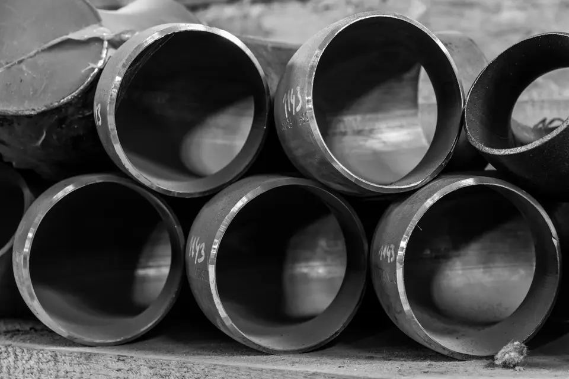
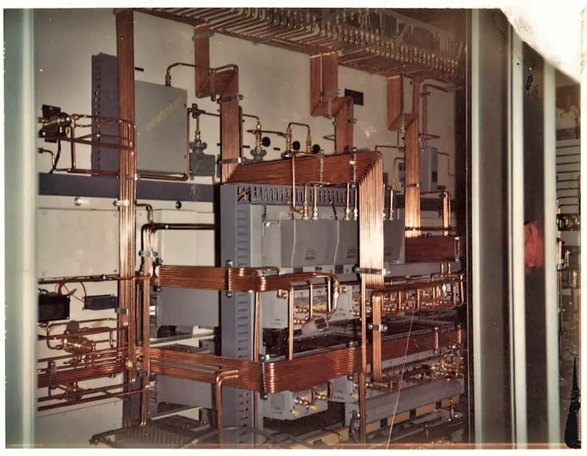
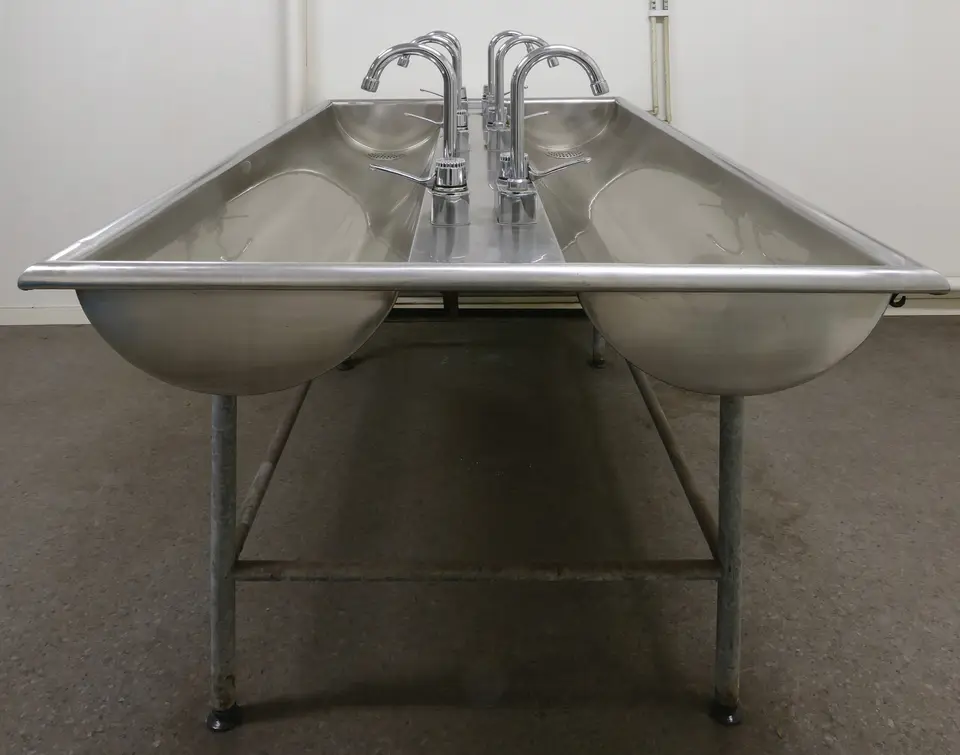

Canalisations et arrivées d'eau
Raccordement d'eau froide et eau chaude sanitaire, sertissage de conduites multicouche et cuivre à Villeurbanne.
Démo Plombier Lyon intervient à Villeurbanne et alentours pour la pose de robinetterie, rénovation de tuyauterie cuivre et PER, recherche de fuite et urgences sanitaires.
Nous assurons des interventions pérennes pour tous vos aménagements et réparations de canalisations.
Raccordement d'eau froide et eau chaude sanitaire, sertissage de conduites multicouche et cuivre à Villeurbanne.
Remplacement de chauffe-eau électrique, vidange et pose de groupe de sécurité certifié à Villeurbanne.
Montage de mitigeurs thermostatiques, réfection de joints d'étanchéité et pose d'éviers à Villeurbanne.
Aperçu de nos raccordements et outillages utilisés lors de nos interventions.



Nous intervenons également dans les localités voisines de Villeurbanne :
Un projet de plomberie à Villeurbanne ? Contactez notre atelier pour convenir d'une visite technique.
1 rue de la Démonstration, 69003 Lyon
+33 4 00 00 00 00